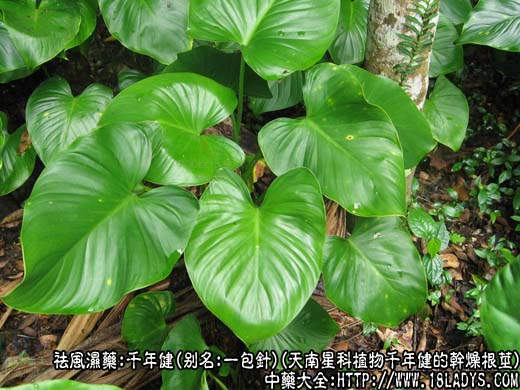
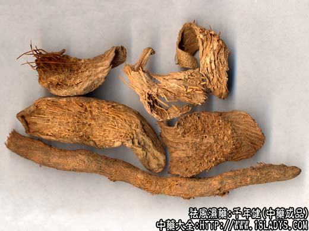
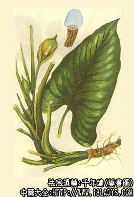

千年健为常用中药。《本草纲目拾遗》列入草部。
别名：一包针、千年见。
来源：为天南星科植物千年健的干燥根茎。
产地：国内主产于广西：云南等地。国外产于南洋群岛等地。
性状鉴别：千年健为细长条状的圆柱形，状如藤，均扭曲。长约30~60厘米，直径6~8毫米。表面灰棕色或浅红棕色，粗糙，有多余深纵沟纹及黄白色的针状物，沟纹成层排列，每成层长约1.5厘米，末端即成针刺状突物。质脆，易折断，断面树脂样，有一束黄色细筋。气香辛烈，稍有樟脑气，味辛而微苦。
以条大，红棕色，体坚实，香气浓烈者为佳。
主要成分：主含挥发油等。
功效与作用：千年健有祛风湿、强筋骨、止痛消肿作用。实验证明止痛祛风力良好，为风湿痹痛用药，对老年筋骨酸软无力，尤为适宜。均为野生，多生于山沟等阴湿地方。
炮制：切片，生用。
性味：辛、温。
归经：入肝、肾经。
功能：祛风湿，强筋骨，止痛。
主治：风寒湿痹，肢节酸痛，麻木，拘挛，老人筋骨痛。又治胃痛。
临床应用：千年健味辛性温，辛能散，温能补，故有强筋壮骨之功，为治风寒湿痹常用药。
1、用于风湿痹痛，腰酸脚软，拘挛麻木等症，常与钻地风相须为用，能增强祛风止痛，强筋壮骨之功。
2、用于胃寒疼痛，研粉单用和酒冲服。
使用注意：阴虚火旺，口苦舌干者慎用。
用量：3～15g；或浸酒服。外用：研末调敷患处。
处方举例：追风丸、没药、木瓜、川乌各30g，当归60g，续断15g，麻黄15g，生杜仲、红花、草乌各30g，千年健、独活、蕲蛇、地风、甘草、羌活各15g，虎骨、乳香、菟丝子各30g。上药共为细末，蜜为丸重6g。（《经验方》）
注《柑园小识》：忌莱菔子。